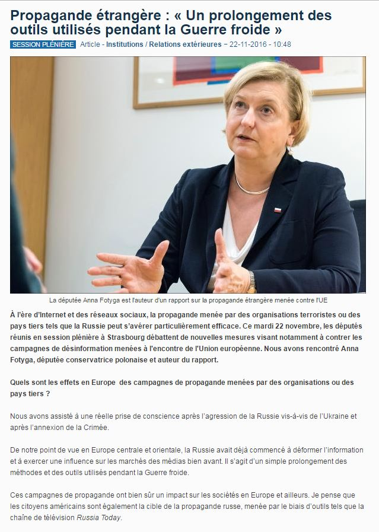

La radicalisation de la rhétorique dans les structures de l'Union européenne est plus un aveu de faiblesse institutionnelle que de vigueur de l'institution. Il est possible d'accuser la Russie de tous les maux, de voir « la main du Kremlin » derrière la montée de l'euroscepticisme malgré la propagande médiatique soutenant à tour de bras la route pavée d'or ouverte par l'UE.
C'est une possibilité. C'est le choix des faibles, de ceux qui ne sont pas capables de reconnaître leurs erreurs. en d'autres termes, en adoptant la résolution appelant à lutter contre la guerre de l'information menée par la Russie et l'état islamique contre l'UE, le Parlement européen a enterré l'illusion même d'un projet européen commun.
La guerre de l'information n'est pas une nouvelle, mais il semble que les grandes démocraties occidentales se retrouvent acculées par les contradictions de leur système idéologique: la gouvernance est effectuée en fonction des intérêts et des idées d'une minorité, pour elle-même, ce qui conduit forcément au rejet par la majorité, plus ou moins silencieuse selon les cas. Pour tenir, le système a besoin de maîtriser deux éléments dont il ne peut pas se passer: les élections et l'information. Il n'est pas possible de revenir sur le mécanisme électif tout en prétendant défendre la démocratie. Si l'UE s'est, dans l'ensemble, affranchie de cette contrainte, elle reste indirectement tributaire des élections nationales. Le second élément, l'information, est donc fondamental pour conduire les électeurs à faire « le bon choix », même si cela ne marche pas toujours, comme nous l'avons vu avec l'élection de Trump ou le premier tour des primaires ne reconnaissant pas la victoire de Juppé, vu comme le continuateur du système après Hollande.
En effet, malgré tous les efforts, l'UE n'a pas la cote, comme le montre un sondage publié cet été dans le Nouvel Obs:
En moyenne, les opinions favorables dépassent légèrement les opinons défavorables (51 % contre 47 %). Mais la tendance est inquiétante. Après un rebond éphémère en 2013-2014, la courbe des « opinions favorables » est repartie vers le bas. On voit sur le graphique suivant que les opinions favorables des Français sont passées en 12 ans de 69 % à 38 % !
Heureusement, pour l'UE, il lui reste la Pologne. Mais le problème est que ce n'est pas elle qui pèse, elle, elle peut être instrumentalisée. Comme ce fut le cas pour l'adoption de cette résolution, soutenue, avec tout le fanatisme nécessaire à cette démarche, par la député polonaise Anna Fotyga, qui utilise manifestement cette assemblée comme élément d'une thérapie de groupe.
Cette résolution, finalement, n'a été adoptée que par la minorité, avec le consentement silencieux de la majorité. 304 pour, 179 contre et, avec tout le poids de la lâcheté, 208 députés se sont courageusement abstenus.
Abstenus de reconnaître qu'il est contraire à l'éthique européenne - je ne parle pas de l'UE, mais de l'Europe - de considérer des opinions contraires comme propagandistes, qu'il est contraire aux principes de gouvernance européens de vouloir utiliser l'enseignement, donc les écoles, pour mieux former les esprits, qu'il est contraire à la liberté de la presse de vouloir rejeter des agences d'information en fonction de leur pays. Rappelons que s'il s'agit d'un combat contre les médias publics, il faudra également interdire la BBC, l'AFP etc.
Tous ces médias financés par l'Etat. S'il s'agit d'un combat contre les médias diffusant en plusieurs langues, il faudra fermer, notamment, tous les médias français diffusant à l'étranger, ces médias du groupe France télévision, qui sont financés par l'Etat. L'absurdité de cette méthode est flagrante. Elle est rétrograde et sectaire, et je ne vois pas pourquoi les pays européens doivent se rendre prisonniers de la médiocrité de certains.
Avec cette résolution, l'UE reconnaît sa défaite: elle n'arrive pas à convaincre. Or, elle ne peut se remettre en cause sur le fond. Son projet radicale néo-trotskiste sur le plan des valeurs et néolibérale sur le plan politico-économique ne peut être modifié, car il justifie son existence. Or, n'entraînant que l'adhésion de la minorité, malgré tout le poids de la machine médiatique qui tourne à sens unique, elle ne peut se permettre une réforme institutionnelle: la démocratisation entraînerait la fin. C'est une impasse. Impasse qui explique la radicalité et l'absurdité du discours:
La résolution souligne que l'Union européenne doit lutter contre les campagnes de désinformation et de propagande de la part de pays comme la Russie et d'acteurs non étatiques comme l’État islamique, Al-Qaida et d'autres groupes terroristes djihadistes violents.
Donc la Russie est mise sur le même plan que l'état islamique, ce qui veut donc dire que la Russie est perçue par les instances européennes comme un état terroriste.
La propagande hostile contre l'UE et ses États membres vise à dénaturer la vérité, à provoquer le doute, à diviser l'Union et ses partenaires nord-américains, à paralyser le processus décisionnel, à discréditer les institutions européennes et à susciter la peur et l'incertitude parmi les citoyens européens.
En traduction, c'est à cause de la propagande russe que les pays européens n'arrivent toujours pas à conclure de traité transatlantique qui ferait leur bonheur... et dont Trump ne semble plus vraiment vouloir. Dommage, la résolution était manifestement écrite par l'administration américaine sortante.
Les députés avertissent que le Kremlin a intensifié sa propagande contre l'Union européenne depuis son annexion de la Crimée et la guerre hybride dans le Donbass. Ils notent que « le gouvernement russe utilise un large éventail d'outils et d'instruments, tels que des groupes de réflexion [...], des stations de télévision multilingues (par exemple, Russia Today), des pseudo-agences de presse et des services multimédias (Sputnik) [. ...], des réseaux sociaux et des trolls Internet, afin de s’attaquer aux valeurs démocratiques, de diviser l'Europe, de s’assurer du soutien interne et de donner l’impression que les États du voisinage oriental de l’Union européenne sont défaillants ».
La résolution souligne que le « Kremlin finance des partis politiques et d'autres organisations au sein de l'UE » et déplore « le soutien russe des forces anti-UE » comme les partis d'extrême droite et les forces populistes.
Finalement, si les partis remettant en cause le système et les valeurs de l'UE obtiennent de plus en plus de voix, c'est uniquement dû à l'action agressive de la machine de guerre médiatique comme RT ou Sputnik. C'est peut-être pour cela qu'ils sont pratiquement les seuls à parler, en français, de cette résolution inique ... Si l'on ne prend en compte RFI, qui soutient les députés européens lorsqu'ils « fustigent » la propagande anti-européenne du Kremlin, je cite.
En effet, il vaut mieux ne pas en parler, pour ne pas fatiguer les bonnes gens avec des questions inutiles avant les fêtes de Noël, oups, les fêtes de fin d'année, Noël ayant été déclassé.
Il faut dire que le message passe très bien dans d'autres pays, notamment les pays baltes. A Riga, où chaque année défilent des SS en costume d'époque, à la mémoire de ces héros nationaux qui ont lutté lors de la Seconde guerre mondiale contre l'armée soviétique, et donc avec les SS, l'on vient d'adopter une nouvelle loi qui entre tout à fait dans la logique de ces nouvelles valeurs prônées par l'UE. Il s'agit d'une loi sur la loyauté patriotique.
Non, ce n'est pas une plaisanterie, car on ne plaisante pas avec le patriotisme SS à Riga. Au sein de l'UE. Ainsi, tout enseignant qui ne démontre pas suffisamment de patriotisme, à savoir de loyauté envers le pays et la Constitution, sera démis de ses fonctions et si le problème concerne l'école en entier, elle sera fermée. Cela s'inscrit dans le combat mené contre l'histoire du pays, contre les populations russophones et russophiles qui y vivent.
De cela non plus, la presse ne parle pas et le Parlement européen a mieux à faire que de lutter contre la glorification de l'idéologie nazie. C'est simple: puisque combattre aux côtés d’Hitler signifie contre l'Union soviétique, cela convient tout à fait aux nouveaux maccarthystes. Comme l'UE ne peut manifestement plus fédérer autour d'un projet commun, elle a besoin d'un ennemi commun.


Partager cette page